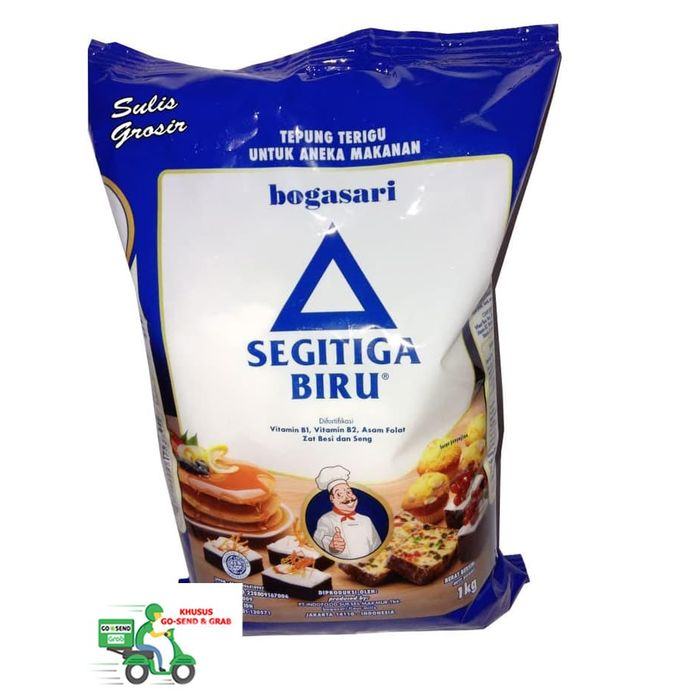

<< kembali ke Daftar Menu
Mengenal Bahan Makanan
Tepung Terigu

Tepung adalah partikel padat yang berbentuk butiran halus atau sangat halus tergantung proses penggilingannya. Biasanya digunakan untuk keperluan penelitian, rumah tangga, dan bahan baku industri. Tepung bisa berasal dari bahan nabati misalnya tepung terigu dari gandum, tapioka dari singkong, maizena dari jagung atau hewani misalnya tepung tulang dan tepung ikan.
Jenis Tepung
- Terigu - adalah tepung/bubuk halus yang berasal dari biji gandum, dan digunakan sebagai bahan dasar pembuat kue,
mi, roti, dan pasta. Kata terigu dalam bahasa Indonesia diserap dari bahasa Portugis trigo yang berarti gandum.
Tepung terigu roti mengandung protein dalam bentuk gluten, yang berperan dalam menentukan kekenyalan makanan yang
terbuat dari bahan terigu.
- Kanji, dari umbi singkong
- Maizena (jagung), dari biji jagung. Maizena biasanya digunakan sebagai bahan pengental saat memasak.
- Hunkue, Pati dari kacang hijau
- Beras, tepung yang terbuat dari beras
- Ketan, tepung yang terbuat dari beras ketan
- Panir, tepung yang terbuat dari penumbukan roti tawar yang dikeringkan.
- Tapioka, dari umbi singkong
Kembali